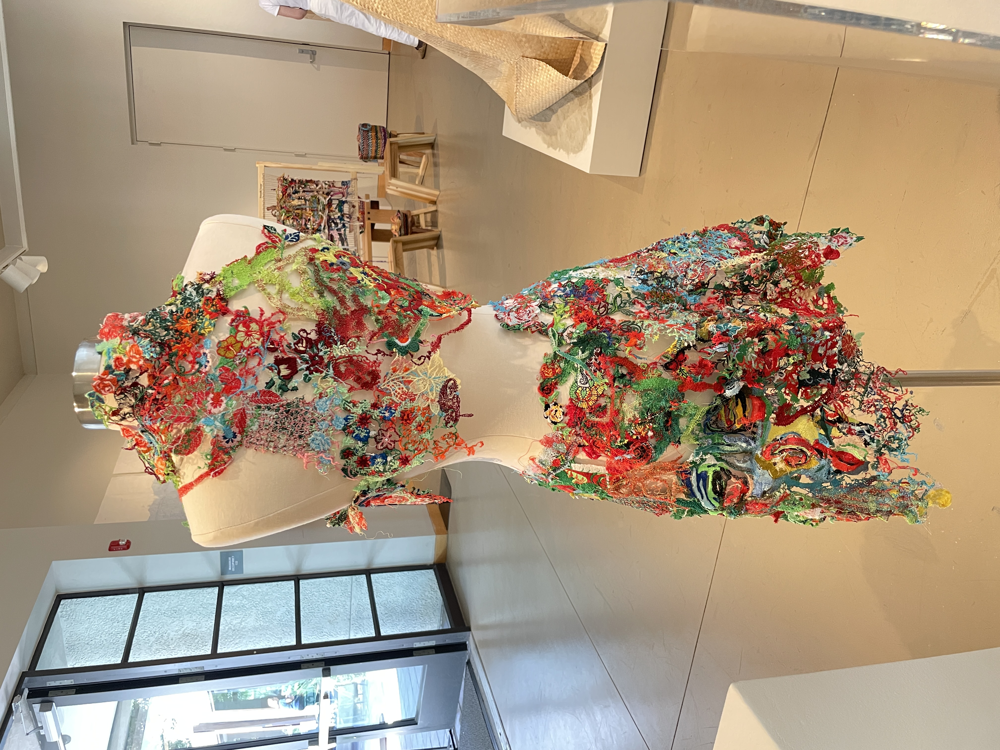
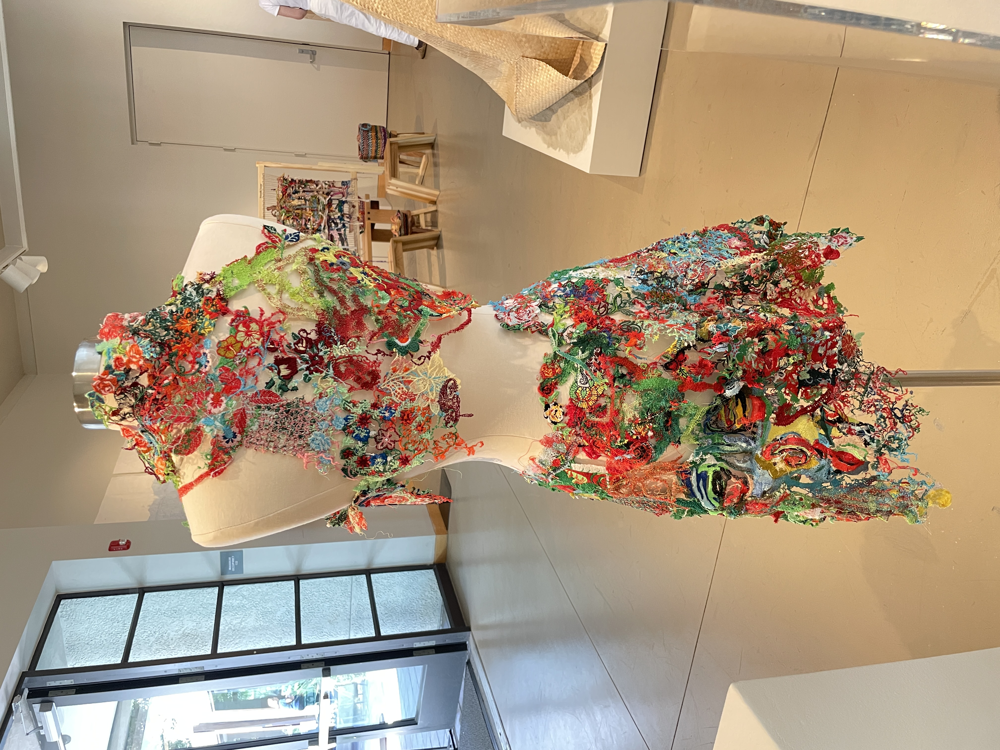

NeoCon
Threads of Connection: Textile Dialogues in a Changing World
Dates: September 19 to September 29, 2024
Location: :iidrr Gallery, New York, New York
Curated by Annie Chen Ziyao and Jing Pei
Threads of Connection was a captivating textile art exhibition that showcased the innovative responses of young artists to contemporary societal issues. Featuring current students and alumni from the MFA Textile program at Parsons School of Design, the exhibition demonstrated how emerging artists used their craft to engage in meaningful dialogue with the world around them through diverse techniques like weaving, dyeing, crochet, knitting, felting, embroidery, and biomaterials. Many works incorporated sustainable practices, such as natural dyes and recycled materials, reflecting the artists' technical skill and environmental awareness while addressing complex social themes, ultimately weaving together creativity, sustainability, and commentary.

Fiber in 3D
Dates: July 20 to Nov. 30, 2024
Location: William D. Cannon Art Gallery, Carlsbad, California
Featuring contemporary dimensional fiber works by over 25 national artists juried by Fiber Art Now. Explore a breadth of unique materials, methods, and themes interpreted through fiber and fabric techniques such as installation, weaving, basketry, sculpture, felting, surface design, knitting, wearables, and mixed media.
 

HGA: Honorable Mention Award
Dates: July, 2024
Location: Wichita, Kansas
This exhibit features the work of juried and invitational artists. Any fiber arts technique may be used. Exhibit will be displayed first in a runway fashion show and then as a traditional exhibit. Inspired by Sunflowers to Sunsets, this year's show encapsulates the essence of nature's perpetual beauty and showcases each artists' mastery in the use of color and texture to transcend boundaries and transform fiber into wearable art that evokes the vibrant splendor of Kansas' iconic blooming fields from dawn to dusk.